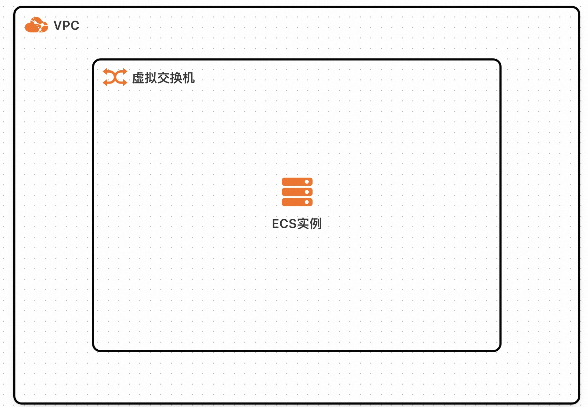
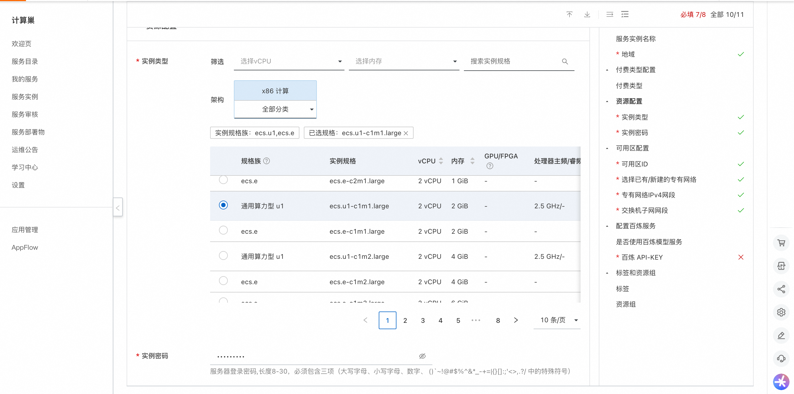
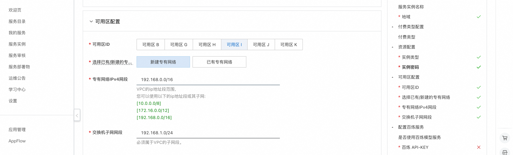
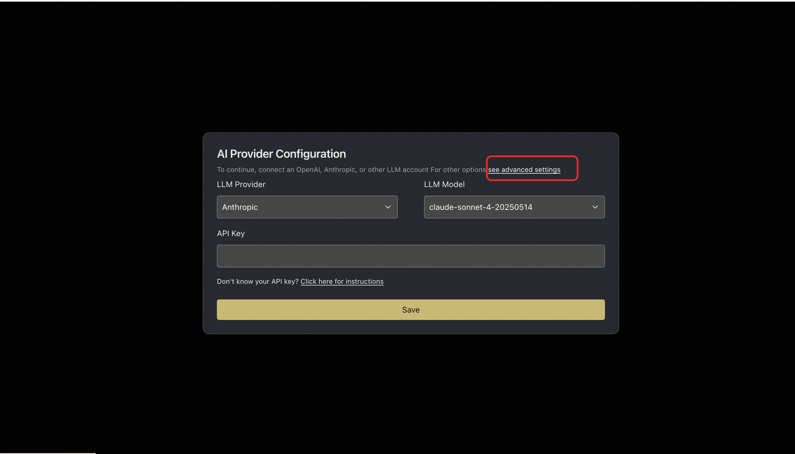
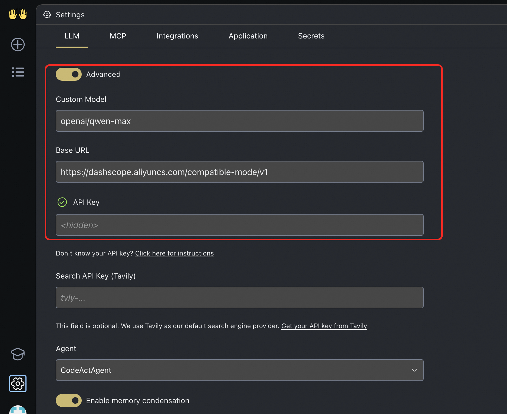

OpenHands服务实例部署文档
概述
OpenHands 是一款基于 AI 的编程工具，旨在通过多智能体协作提升开发效率，减少开发者的编码工作量。它支持代码编写、命令行操作、网页浏览等多种功能，帮助开发者快速完成项目构建、测试和部署。OpenHands 提供了一个安全的沙箱环境，确保代码执行的安全性。同时，它还支持多代理协作，能够将复杂任务分解为多个子任务，由不同的代理协同完成。OpenHands 涵盖了软件工程、网页浏览等多个领域的 15 个基准测试，为学术界和工业界的研究与应用提供了有力支持。 核心特性包括 - 代码生成与迭代 - 从零开始生成代码 - 增强现有代码功能 - 支持多种编程语言 - 智能代码优化 - 无缝集成能力 - 完美融入已有项目 - 添加新功能模块 - 配置自动化工作流 - 减少重复工作 - Bug修复与重构 - 智能诊断问题 - 自动生成测试用例 - 代码模块化优化 - 提高代码可读性
计费说明
OpenHands在计算巢上的费用主要涉及：
- 所选vCPU与内存规格
- 系统盘类型及容量
- 公网带宽
计费方式包括：
- 按量付费（小时）
- 包年包月
部署架构
部署架构采用ECS(云服务器)单机部署
(部署概述内容)
部署流程
部署步骤
- 访问计算巢OpenHands社区版部署链接 按提示填写部署参数,配置ECS实例规格和密码 
- 配置专有网络和可用区 
验证结果
- 查看服务实例。服务实例创建成功后，部署时间大约需要2分钟。部署完成后，页面上可以看到对应的服务实例。
- 通过服务实例访问OpenHands。进入到对应的服务实例后，可以在页面上获取到访问地址
使用说明
配置使用百炼的模型
- 进入OpenHands页面后，首先需要配置模型，如果使用推荐的模型，配置对应API Key即可。
- 如果想使用百炼的模型，可以点击"Advanced Settings" 
- Advanced Settings中通过OpenAI的兼容接口来配置百炼的Base Url 为：https://dashscope.aliyuncs.com/compatible-mode/v1 选择Custom Model， Custom Model的格式为"openai/model_name" 可选的model_name参考链接 
- 配置百炼的API Key，点击"Save"保存即可。API Key的获取方式请参考：获取百炼API Key
© 2009-2022 Aliyun.com 版权所有